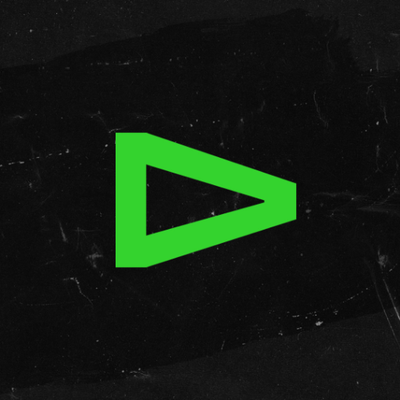
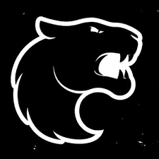
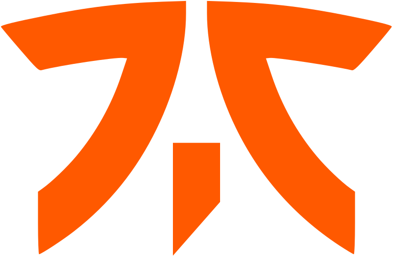
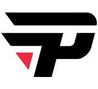
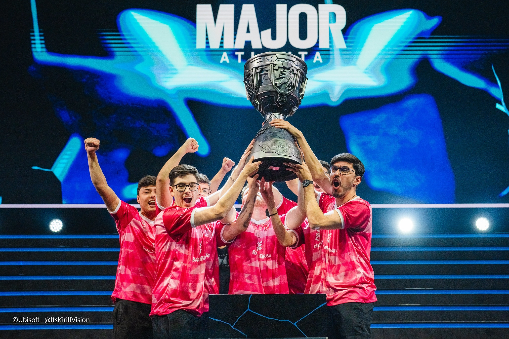

23/08/2024 at 08:15
25/09/2024 at 09:15
27/10/2024 at 10:15
29/11/2024 at 11:15
30/11/2024 at 13:15
| Time | Torneio | Vitórias |
|---|---|---|
|  | PPL | 11 |
|  | Challengers | 13 |
|  | Masters | 10 |
|  | Game changers Brasil Series 2 | 17 |
No último domingo, dia 25, o Ginásio do Ibirapuera, em São Paulo, recebeu a final do Six Invitational 2024, o mundial de Rainbow Six Siege, onde a w7m virou a série melhor de cinco (md5) contra a FaZe em uma decisão histórica entre lines brasileiras. Com emoção até o último round, o time de HerdsZ finalmente foi campeão mundial de R6 depois de um vice na última edição e de conquistar os dois últimos Majors.
Na segunda final brasileira de um mundial desde o título da NiP em 2021 em cima da Liquid, a torcida presente Ginásio do Ibirapuera pôde acompanhar de perto uma das narrativas mais impressionantes do cenário. Pelo contexto das duas classificações, w7m e FaZe chegaram com moral na decisão, mas foi a FaZe que entrou no jogo primeiro. Na primeira partida da melhor de cinco, em Oregon, o time passou o carro no ataque e fechou o placar do jogo em 7 a 1. No banco, segundo mapa, a w7m empatou a série com a vitória por 7 a 5. O terceiro mapa colocou novamente a FaZe na frente da série, com um 7 a 5 na Torre.